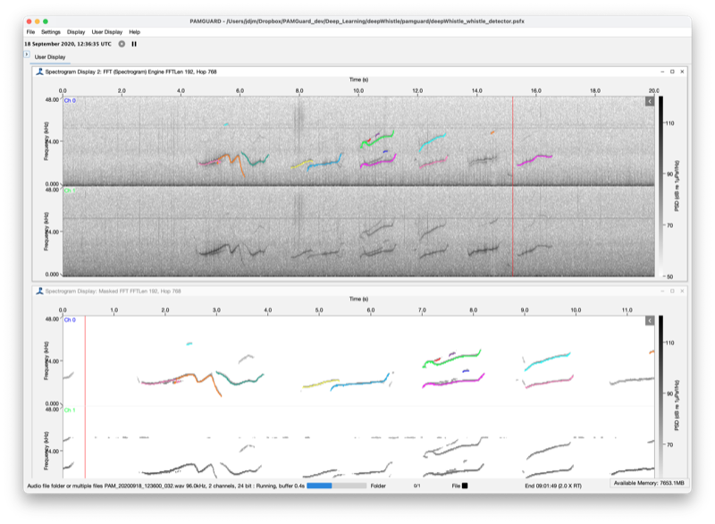
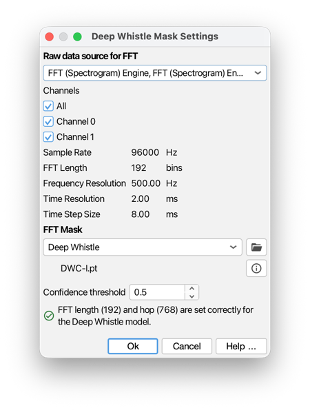

The Deep Whistle module uses deep-learning models to enhance tonal whistle sounds (e.g. dolphin whistles) in a spectrogram. It takes the output of an FFT (spectrogram) module and applies a learned mask that keeps the time-frequency bins belonging to whistle contours and suppresses everything else (background noise, clicks, broadband transients). The result is a new masked FFT data block which can be displayed as a much cleaner spectrogram and/or passed to a downstream detector such as the Whistle and Moan Detector to improve detection and reduce false positives and contour fragmentation. Essentially, this works by increasing the signal to noise ratio (SNR), with the general rule that most automated detection/classification algorithms are far more accurate at higher SNR.
The module is general: the masking model is selected from a list of interchangeable FFT masks, and new models can be added over time. Two models are currently available:
Each model has an information button next to its name that gives a short description and a link to the paper describing it.

The Deep Whistle module running in PAMGuard. Top: the source spectrogram with the Whistle and Moan Detector output (using the Deep Whistle mask as its source data) overlaid on channel 0. Bottom: the masked FFT spectrogram, in which only whistle energy remains and can be passed to a whistle detector - the same whistle and moan contours are shown on channel 0.
For each channel the module buffers a short window of FFT slices, converts them to a spectrogram and applies a set of model-specific pre-processing transforms (frequency trimming, conversion to decibels, normalisation). The buffered spectrogram is passed to the deep-learning model, which returns a confidence between 0 and 1 for every time-frequency bin - the probability that the bin is part of a whistle. Bins whose confidence is below the confidence threshold are set to zero; the remaining confidences are multiplied into the FFT data. The masked FFT is then published as a new data block.
Because the model works on the spectrogram, the FFT source should be configured with the frequency and time resolution the model expects, although the models cope with some changes if needed (see below). The two models were trained with different settings, so the module checks the source automatically and warns if it is not set up with the FFT length and hop the model was trained on.
The module is added from the PAMGuard File > Add Modules > Detectors > Deep Whistle menu. It depends on an FFT (Spectrogram) Engine module, so add an FFT Engine first (or let PAMGuard add one for you). A typical processing chain is:
Sound Acquisition -> FFT Engine -> Deep Whistle -> Whistle and Moan Detector
Open the settings from the module's entry in the Settings menu. The settings pane is shown below.

The Deep Whistle settings pane.
Select the FFT (spectrogram) data block to process and the channels to include. The panel shows the sample rate, FFT length, frequency resolution and time resolution of the selected source so you can check they are suitable.
Each model was trained at a particular time-frequency resolution, expressed as an analysis window and hop in milliseconds (which correspond to an FFT length and hop in samples that depend on the sample rate):
| Model | Analysis window | Hop |
|---|---|---|
| Deep Whistle | ~2 ms | ~8 ms |
| SAM-Whistle | ~8 ms | ~2 ms |
The pane validates the selected FFT source against the chosen model. If the FFT length or hop is wrong, a warning is shown together with a Set FFT parameters button that configures the parent FFT Engine automatically. When the source is correct a green confirmation message is shown. Note that the Deep Whistle model will work with different FFT lengths, although it may not be as effective.
Choose the masking model from the FFT Mask drop-down. When a model is selected it is downloaded automatically from the PAMGuard model repository (a progress indicator is shown while downloading). Once downloaded the model is cached locally, so it is not downloaded again on subsequent runs. The name of the loaded model file is shown below the drop-down.
Two buttons sit next to the model name:
The confidence threshold (0-1) sets how confident the model must be before a time-frequency bin is kept. Higher values keep only the strongest whistle energy (fewer false positives, but faint whistles may be lost); lower values keep more (more complete contours, but more noise). A value around 0.4-0.5 is a reasonable starting point.
The module produces a Masked FFT data block with the same FFT length and hop as the source. You can:
Both models can be retrained on your own annotated data (see the model's own repository for training instructions). To use a retrained model in PAMGuard, click the import button next to the model name and select the retrained model file. The custom file simply replaces the online model file for that mask, so PAMGuard loads it in place of the downloaded model. Selecting a different mask and returning, or re-downloading, will revert to the online model.
The SAM-Whistle model is large, so it benefits greatly from running on a GPU. On
Apple Silicon Macs the module automatically runs SAM-Whistle on the
integrated GPU (via Apple's Metal/MPS backend), which is roughly 3-5x
faster than the CPU. This happens transparently: the module tries the GPU first
and falls back to the CPU if the GPU is unavailable, so no configuration is required. The
console prints which device is being used
(SamWhistleMask: model running on device ...).
For the GPU path to work the model must be exported without
torch.jit.freeze (the export script export_torchscript.py leaves
freezing off by default). A model exported with freezing still runs, but only on the CPU.
The smaller Deep Whistle model runs on the CPU and is fast enough that GPU acceleration is
not needed.
The models used by this module are described in the following papers (also available from the information button in the settings pane):
Li, P. et al. (2020) 'Learning deep models from synthetic data for extracting dolphin whistle contours', 2020 International Joint Conference on Neural Networks (IJCNN). IEEE, pp. 1-10. doi:10.1109/IJCNN48605.2020.9206992
The repository for training new Deep Whistle models is https://github.com/Paul-LiPu/DeepWhistle.
A MATLAB library for running Deep Whistle can be found at https://github.com/MarineBioAcousticsRC/silbido.
Zhang, X. et al. (2025) 'Automating time × frequency annotations of delphinid whistles by adapting a foundational transformer neural network', Scientific Reports, 15, 37809. doi:10.1038/s41598-025-21642-x
The repository for training new SAM-Whistle models is https://github.com/xixinzhang/sam_whistle.